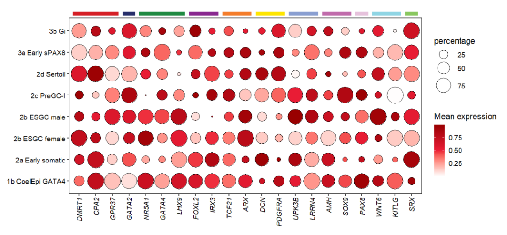
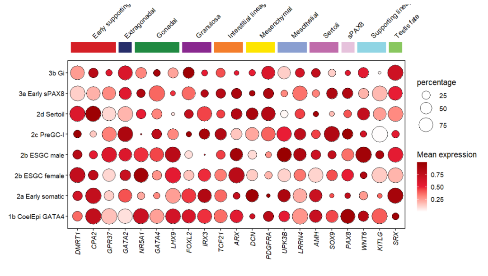
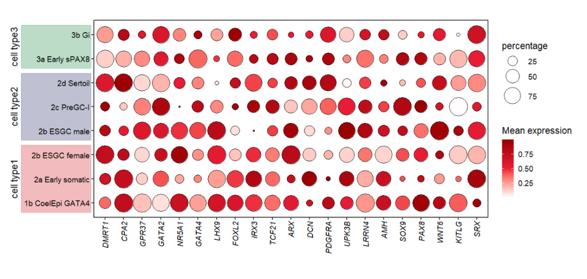

Chapter 9 mapping introduction
Imaging that you need to supply multiple exact coordinates to add some annotations when set annoManual = T in jjAnno or in other situations. This way is not so elegant especially when you have multiple annotations. A pile of numbers will confuse you sometimes. It will be more convenient to add the annotations with an auto-annotatation mode.
Here you only need to add one group column and specify this column is used to annotate your axis. jjAnno will calculate the x/y coordinates automatically which save your much time. Just a little ajustments need to be done to make your figure much pretty.
Note 1:
- You should make sure that your plot x/y axis orders is correct before to annotate.
- Turn off the clip
(coord_cartesian(clip = 'off')).- Try to expand the plot margin if the viewplot is not wholly shown.
Note 2:
The mapping operation can be used on the following functions:
- annoPoint2
- annoRect
- annoSegment
9.1 Basic plot
Let’s make a simple dot plot:
# load data
dot_data <- read.delim('gene-dot.txt',header = T) %>%
arrange(class)
# check
head(dot_data,3)
# cell gene class mean.expression percentage
# 1 1b CoelEpi GATA4 DMRT1 Early supporting 0.3749122 36.03614
# 2 1b CoelEpi GATA4 CPA2 Early supporting 0.7495705 95.82235
# 3 1b CoelEpi GATA4 GPR37 Early supporting 0.1604790 95.79420
# colnames
colnames(dot_data)
# [1] "cell" "gene" "class" "mean.expression" "percentage"
unique(dot_data$cell)
# [1] "1b CoelEpi GATA4" "2a Early somatic" "2b ESGC male" "2b ESGC female"
# [5] "2c PreGC-I" "2d Sertoil" "3a Early sPAX8" "3b Gi"
# add cell group
dot_data$cellGroup <- case_when(
dot_data$cell %in% c("1b CoelEpi GATA4", "2a Early somatic", "2b ESGC male") ~ "cell type1",
dot_data$cell %in% c("2b ESGC female", "2c PreGC-I", "2d Sertoil") ~ "cell type2",
dot_data$cell %in% c("3a Early sPAX8", "3b Gi") ~ "cell type3"
)We should make the order to be shown correctly:
# order
dot_data$gene <- factor(dot_data$gene,levels = unique(dot_data$gene))Plot:
# plot
pdot <-
ggplot(dot_data,aes(x = gene,y = cell)) +
geom_point(aes(fill = mean.expression,size = percentage),
color = 'black',
shape = 21) +
theme_bw(base_size = 14) +
xlab('') + ylab('') +
scale_fill_gradient2(low = 'white',mid = '#EB1D36',high = '#990000',
midpoint = 0.5,
name = 'Mean expression') +
scale_size(range = c(1,13)) +
theme(panel.grid = element_blank(),
axis.text = element_text(color = 'black'),
aspect.ratio = 0.5,
plot.margin = margin(t = 1,r = 1,b = 1,l = 1,unit = 'cm'),
axis.text.x = element_text(angle = 90,hjust = 1,vjust = 0.5,
face = 'italic')) +
coord_cartesian(clip = 'off')
pdot
Or you can load the test data in jjAnno package:
library(jjAnno)
library(ggplot2)
data("pdot")Here we use column “class” and “cellGroup” to annotate X and Y axis.
9.2 Annotate with annoSegment
Some segment annotation examples:

Reference: Single-cell roadmap of human gonadal development
Add segment with aesGroup = T and aesGroName = ‘class’, we do not need to supply x coordinate and set annoManual = T anymore:
# pdot <- pdot +
# theme(aspect.ratio = NULL)
# add segment
annoSegment(object = pdot,
annoPos = 'top',
aesGroup = T,
aesGroName = 'class',
yPosition = 8.8,
segWidth = 0.5)
Add branch:
# add branch
annoSegment(object = pdot,
annoPos = 'top',
aesGroup = T,
aesGroName = 'class',
yPosition = 8.8,
segWidth = 0.5,
addBranch = T,
lwd = 2,
branDirection = -1,
pCol = rep('black',11))Add text label:
# add text
annoSegment(object = pdot,
annoPos = 'top',
aesGroup = T,
aesGroName = 'class',
yPosition = 8.8,
segWidth = 0.5,
addText = T,
textRot = 45,
hjust = 0)Mapping with cellGroup:
# mapping cell group
annoSegment(object = pdot,
annoPos = 'left',
aesGroup = T,
aesGroName = 'cellGroup',
xPosition = -3.5,
segWidth = 0.5,
addText = T,
textRot = 90,
textHVjust = -0.5,
textSize = 14)9.3 Annotate with annoRect
Some rect annotation examples:
Reference: Single-cell roadmap of human gonadal development
Mapping with class:
# mapping by group
annoRect(object = pdot,
annoPos = 'top',
aesGroup = T,
aesGroName = 'class',
yPosition = c(9,9.5),
rectWidth = 0.8)Use roundRect to add roundCorner rect:
# add round rect
annoRect(object = pdot,
annoPos = 'top',
aesGroup = T,
aesGroName = 'class',
yPosition = c(9,9.5),
rectWidth = 0.8,
roundRect = T)You can change the corner radius:
# change corner radius
annoRect(object = pdot,
annoPos = 'top',
aesGroup = T,
aesGroName = 'class',
yPosition = c(9,9.5),
rectWidth = 0.8,
roundRect = T,
roundRadius = 0.5)Add to botomn:
# add to botomn
annoRect(object = pdot,
annoPos = 'botomn',
aesGroup = T,
aesGroName = 'class',
yPosition = c(-2,0.25),
rectWidth = 0.8,
alpha = 0.35)annoRect can also add text label now:
# add text label
annoRect(object = pdot,
annoPos = 'top',
aesGroup = T,
aesGroName = 'class',
yPosition = c(9,9.5),
rectWidth = 0.8,
addText = T,
textRot = 45,
hjust = 0,
textCol = rep('black',11),
textHVjust = 0.5)
Mapping with cellGroup:
# mapping cell group
annoRect(object = pdot,
annoPos = 'left',
aesGroup = T,
aesGroName = 'cellGroup',
xPosition = c(-3.5,0.25),
alpha = 0.3,
rectWidth = 0.8,
addText = T,
textRot = 90,
textSize = 14,
textCol = rep('black',3),
textHVjust = -2.3)
9.4 Annotate with rotated Rect
If you have rotated the axis text before annotatation, the text labels will do not match the rect region when you add rect annotations. Here I supply a rotateRect parameter to rotate the rect with a matched degree to produce a will-matched plot.
First we move the text label to the top:
# rotate the x text label(top)
pdot_test <-
pdot +
scale_x_discrete(position = 'top') +
theme(axis.text.x = element_text(angle = 60,hjust = 0))
pdot_testLet’s add a rect annotation:
# normal rect annotation
annoRect(object = pdot_test,
annoPos = 'top',
aesGroup = T,
aesGroName = 'class',
yPosition = c(8.6,10.5))Now rotate the rect:
# rotate rect
annoRect(object = pdot_test,
annoPos = 'top',
aesGroup = T,
aesGroName = 'class',
yPosition = c(8.6,10.4),
rotateRect = T)Ajust the rect width:
# ajust width
annoRect(object = pdot_test,
annoPos = 'top',
aesGroup = T,
aesGroName = 'class',
yPosition = c(8.6,10.4),
rotateRect = T,
alpha = 0.5,
rectWidth = 0.8)You can specify a degree you want:
# supply a rotate degree
annoRect(object = pdot_test,
annoPos = 'top',
aesGroup = T,
aesGroName = 'class',
yPosition = c(8.6,10.4),
rotateRect = T,
alpha = 0.5,
rectWidth = 0.9,
rectAngle = 20)Ypu can also shift the rect with horizotal or vertical direction:
# shift the rotated rect
annoRect(object = pdot_test,
annoPos = 'top',
aesGroup = T,
aesGroName = 'class',
yPosition = c(8.6,10.4),
rotateRect = T,
alpha = 0.5,
rectWidth = 0.9,
rectAngle = 50,
normRectShift = 0.3)Adding the group text label if you want:
# add group label
annoRect(object = pdot_test,
annoPos = 'top',
aesGroup = T,
aesGroName = 'class',
yPosition = c(8.6,10.4),
rotateRect = T,
alpha = 0.5,
rectWidth = 0.9,
rectAngle = 50,
normRectShift = 0.15,
addText = T,
textHVjust = 1,
textRot = 60,
hjust = 0,
textShift = 0.5)Adding to the bottom:
# rotate the x text label(bottom)
pdot_test <-
pdot +
theme(axis.text.x = element_text(angle = 45,hjust = 1,vjust = 1))
# add to bottom
annoRect(object = pdot_test,
annoPos = 'botomn',
aesGroup = T,
aesGroName = 'class',
yPosition = c(-1.3,0.3),
rotateRect = T,
alpha = 0.5,
rectWidth = 0.9)Adding to the left, you should ajust the rectAngle and rotatedRectShift for several times to get a perfect preference:
# rotate the y text label(left)
pdot_test <-
pdot +
theme(axis.text.y = element_text(angle = 45,hjust = 1))
# rotate the rect
annoRect(object = pdot_test,
annoPos = 'left',
aesGroup = T,
aesGroName = 'cellGroup',
xPosition = c(-3.5,0.3),
rotateRect = T,
alpha = 0.5,
rectWidth = 0.8,
rectAngle = 20,
rotatedRectShift = 2.8)9.5 Annotate with annoPoint2
Some point annotation examples:
Reference: Molecular logic of cellular diversification in the mouse cerebral cortex
Here I have made some improvements on the annoPoint function which make it upgrade into annoPoint2. But the annoPoint function still in this package and works well. The annoPoint2 can also be used to annotate plot with your group columns. The follwing examples show you:
# mapping with class
annoPoint2(object = pdot,
annoPos = 'top',
aesGroup = T,
aesGroName = 'class')You can also turn on the shape mapping:
# turn on shape mapping
annoPoint2(object = pdot,
annoPos = 'top',
aesGroup = T,
aesGroName = 'class',
yPosition = 9,
aesShape = T,
ptSize = 2)Add text label:
# add text label
annoPoint2(object = pdot,
annoPos = 'top',
aesGroup = T,
aesGroName = 'class',
ptSize = 2,
yPosition = 9,
addText = T,
textRot = 45,
hjust = 0,
textHVjust = 0.4)Mapping with cellGroup:
# mapping with cellGroup
annoPoint2(object = pdot,
annoPos = 'left',
aesGroup = T,
aesGroName = 'cellGroup',
xPosition = -2.8)If you want to put the point annotation between the text and aixs, you should first expand the space between axis text and axis line:
library(ggplot2)
# expand y axis text space
pdot1 <-
pdot +
theme(axis.text.y = element_text(margin = margin(r = 1,unit = 'cm')))
# add point
annoPoint2(object = pdot1,
annoPos = 'left',
aesGroup = T,
aesGroName = 'cellGroup',
xPosition = -0.2,
pCol = rep(c('#488FB1','#4FD3C4','#C1F8CF'),c(3,3,2)))
9.6 Annotate with annoTriangle
I also supply an annoTriangle to add triangle annotation in plot which is familiar with the following dotplot here:
This figure shows the different celltype numbers’ variation along continues reaearch time point.
Let’s add an triangle:
# add triangle
annoTriangle(object = pdot,
annoPos = 'top',
xPosition = c(1,21),
yPosition = c(8.8,9.3))Add a border on it:
# add border
annoTriangle(object = pdot,
annoPos = 'top',
xPosition = c(1,21),
yPosition = c(8.8,9.3),
addBorder = T,
lwd = 2)You can also remove the triangle annotation:
# remove triangle
annoTriangle(object = pdot,
annoPos = 'top',
xPosition = c(1,21),
yPosition = c(8.8,9.3),
addBorder = T,
lwd = 2,
addTriangle = F)There are four types triangle(RU/RD/LU/LD) which can be choosed to show:
# change triangle type(4 types)
annoTriangle(object = pdot,
annoPos = 'top',
xPosition = c(1,21),
yPosition = c(8.8,9.3),
addBorder = T,
lwd = 2,
triangleType = 'LD')Supply colors:
# change color
annoTriangle(object = pdot,
annoPos = 'top',
xPosition = c(1,21),
yPosition = c(8.8,9.3),
addBorder = T,
lwd = 2,
triangleType = 'LD',
fillCol = useMyCol('paired',10))Add to botomn:
# add to bottomn
annoTriangle(object = pdot,
annoPos = 'botomn',
xPosition = c(1,21),
yPosition = c(-1.7,-1.2),
addBorder = T,
lwd = 2,
triangleType = 'RU',
fillCol = useMyCol('paired',10))9.7 Example
Let’s draw a correlation plot:
library(jjAnno)
library(ggplot2)
# 加载内置数据集
data('mtcars')
# 计算相关性系数
corda <- data.frame(cor(mtcars))
# 上三角操作
corda[upper.tri(corda)] <- NA
# 加载R包
library(reshape2)
library(tidyverse)
# 增加行名列
corda$y <- rownames(corda)
# 宽数据转长数据
da <- melt(data = corda) %>% na.omit()
# 因子化
da$variable <- factor(da$variable,levels = unique(da$variable))
da$y <- factor(da$y,levels = rev(unique(da$y)))
# plot
p <-
ggplot(da) +
# 矩形图层
geom_tile(aes(x = variable,y = y),fill = 'white',
show.legend = F,
color = 'black') +
# 点图层
geom_point(aes(x = variable,y = y,fill = value,size = value),
show.legend = T,
shape = 21,color = 'black') +
theme_minimal(base_size = 16) +
# 主题调整
theme(panel.grid = element_blank(),
aspect.ratio = 1,
axis.text.x = element_text(angle = 45,hjust = 1),
plot.margin = margin(t = 2,unit = 'cm')) +
# 点颜色
scale_fill_gradientn(colors = colorRampPalette(c("#F6E3C5", "#A0D995", "#4CACBC"))(10)) +
# 点大小范围
scale_size(range = c(7,14)) +
xlab('') + ylab('') +
coord_cartesian(clip = 'off')
pAdd two layers point annotation:
# annotate
p1 <- annoPoint2(object = p,
annoManual = T,
xPosition = c(1:11),
yPosition = c(12:2))
# anno to left
annoPoint2(object = p1,
annoPos = 'left',
yPosition = c(1:11),
xPosition = -0.8)